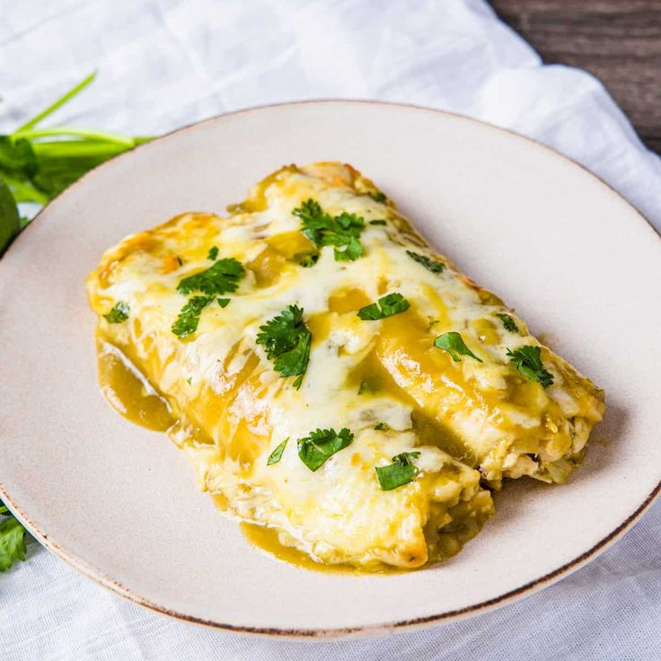

Chicken Enchiladas with Creamy Green Chile Sauce

This recipe is a delicious twist on traditional enchiladas, featuring tender chicken wrapped in tortillas and smothered in a creamy green chile sauce. Perfect for a comforting dinner!
Ingredients:
- 2 cups cooked, shredded chicken
- 8-10 corn tortillas
- 1 cup shredded cheese (cheddar or Monterey Jack)
- 1 can (4 oz) diced green chiles
- 1 cup sour cream
- 1/2 cup chicken broth
- 1 tablespoon olive oil
- Salt and pepper to taste
Instructions:
- Preheat your oven to 350°F (175°C).
- In a skillet, heat olive oil over medium heat. Add the shredded chicken and cook until heated through.
- In a separate bowl, mix the diced green chiles, sour cream, and chicken broth to create the creamy sauce.
- Warm the tortillas in a dry skillet or microwave until pliable.
- Spoon some of the chicken onto each tortilla, roll them up, and place them seam-side down in a baking dish.
- Pour the creamy green chile sauce over the rolled enchiladas and sprinkle with shredded cheese.
- Bake in the preheated oven for 20-25 minutes, or until the cheese is melted and bubbly.
- Serve hot and enjoy!
Back to Recipes List